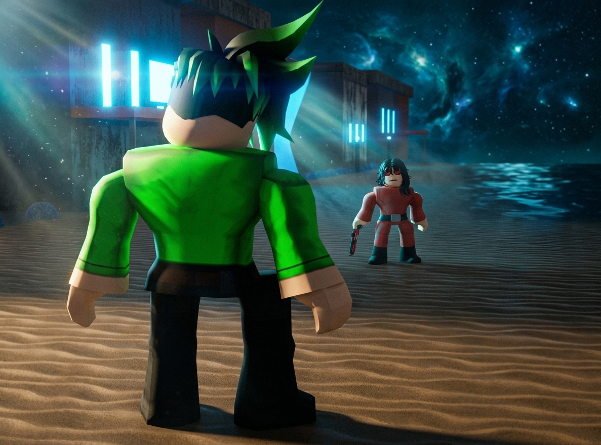

Beneath The Stormy Seas — Chapters 6–10
Saga 3: The Varkuun Incident Arc

Chapter 6: Arrival of the Time Breaker God
The atmospheric residue over Varkuun’s coastal perimeter was still thick with ozone from the dreadnought assault when a massive rift tore open the night sky. Chrono-sparks cascaded down onto the desolate terrain as Andrew OverDark, the legendary Time Breaker God, stepped out of temporal space and onto the soil of Varkuun.
Standing near the edge of the forward staging area, Angelo Pierce, Ral Awakening, Kole Rogue, and Tom Letanio turned to meet him. Relieved smiles broke out among the Guardians at the sight of their powerhouse ally. "Good to see you back on the field, Andrew," Tom called out, walking over to welcome him.
Chapter 7: The Sensed Threat
Before greetings could fully exchange, Andrew’s eyes glowed with temporal energy. He raised a hand, cutting off the conversation as his god-tier perception cut through the surrounding storm. "Hold," Andrew said, his voice echoing with cosmic force. "A remaining Vexx Empire detachment is lurking in the perimeter trenches nearby."
Without hesitation, Andrew, Angelo, Ral, Kole, and Tom stepped forward as a unified squad, walking directly into the shadowed valley where a heavily armed Vexx Empire Squad was attempting to regroup and consolidate their stolen hardware.
Chapter 8: Confrontation with Ami Zero
From the rear line of the enemy detachment stepped Ami Zero, a high-ranking Vexx Empire Director. Her glowing mask flickered as her gaze locked onto Angelo Pierce. Years ago, before his stand as a Guardian, Ami had revered Angelo as their absolute sovereign emperor. Seeing him leading the enemy squad filled her with bitter rage.
"You were once our Emperor, Angelo," Ami Zero spat, drawing her high-frequency blade. "And now you walk among traitors." Angelo stood calm, his eyes unflinching as he looked back at her. "I walked away to protect existence from corruption," Angelo replied coldly before raising his hand to command the squad: "Guardians, clear the area."
Chapter 9: The Time Breaker's Wrath
Before the Vexx forces could open fire, Andrew OverDark charged forward at light speed. Closing the gap instantaneously, Andrew delivered a brutally powerful strike to Director Ami Zero's chest, shattering her kinetic shields in a single impact.
Hoisting the Director into the air with unstoppable force, Andrew slammed her against the solid obsidian ground, driving his knee directly into her spine with an audible crack that neutralized her instantly. Standing over her broken form, Angelo called out to Andrew: "Don't finish her. Take her back to Guardia for full interrogation."
Chapter 10: The Blade & Chain Lethality
As the rest of the Vexx Empire squad rushed to cover, Ral Awakening drew his genuine Crimson Fear Sword and summoned heavy Dark Star chains. Wrapping the chains tightly around the hilt of his sword, Ral pioneered a lethal new long-range chain-and-sword combo.
Moving at extreme, blinding speeds, Ral lashed the Crimson Fear across the battlefield like a tethered whip. The blade sliced through entire waves of Vexx soldiers, returning to his hands in fluid, lethal arcs. Watching from the royal overlook, Princess Anuket stared in absolute awe—utterly captivated by Ral's incredible display of strength, his deadly innovation, and the undeniable draw she felt toward him.